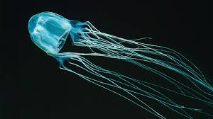

Chironex fleckeri còn biết đến với tên gọi là ong bắp cày biển là một loài sứa có nọc độc chết người trong nhóm sứa hộp được tìm thấy ở bờ biển từ phía Bắc nước Úc và New Guinea cho đến Philippines và Việt Nam. Sứa hộp có nguồn gốc ở bờ biển phía bắc Úc và các nước Đông Nam Á, sống chủ yếu ở những vùng nước ấm trên khắp thế giới. Theo ước tính hơn 100 người tử vong mỗi năm trên toàn cầu do bị một số loài sứa biển này chích.
Chúng là một trong những loài động vật đáng sợ nhất đại dương bởi những xúc tu của một con sứa hộp. Nọc độc có chứa trong những xúc tu của con sứa hộp giúp nó lọt vào danh sách những sinh vật độc nhất trên thế giới. Sứa hộp gần như vô hình, nó thực sự trở thành cơn ác mộng bí ẩn của biển cả. Loài sứa này có tới 60 xúc tu, mỗi cái dài đến 4,5m với 5.000 tế bào ngòi châm chứa độc tố đủ để giết chết 60 người. Chất độc tấn công hệ thần kinh và khiến tim ngừng đập và ngừng hô hấp. Tuy nhiên, vì đặc điểm cơ thể như trên, sứa hộp không thể bơi nhanh. Đặc biệt khi chuyển hướng, sứa hộp khá vất vả với bộ xúc tu quá dài. Khi đi săn, loài sứa kịch độc này cũng có phản ứng không nhanh nhẹn.

Sứa hộp là sinh vật biển giết người bằng những tua độc. Người ta có thể lầm tưởng sinh vật bé nhỏ và mỏng manh này là loài vô hại. Nhưng thực tế, độc tố của loài sinh vật này là thuộc loại mạnh nhất thế giới. Một nhát cắn của nó cũng có thể giết chết người. Sau khi thâm nhập vào trong cơ thể, nọc độc sẽ tấn công và gây tê liệt hệ thần kinh của nạn nhân trong vòng vài phút. Thậm chí nhiều người biết bơi đã chết đuối trước khi kịp vào bờ.
Loài sứa này ăn cá và bơi khá nhanh. Chúng hoạt động vào ban ngày và "ngủ" vào ban đêm.
